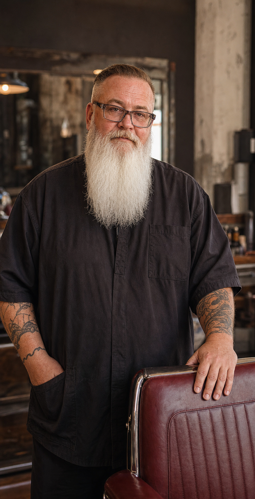
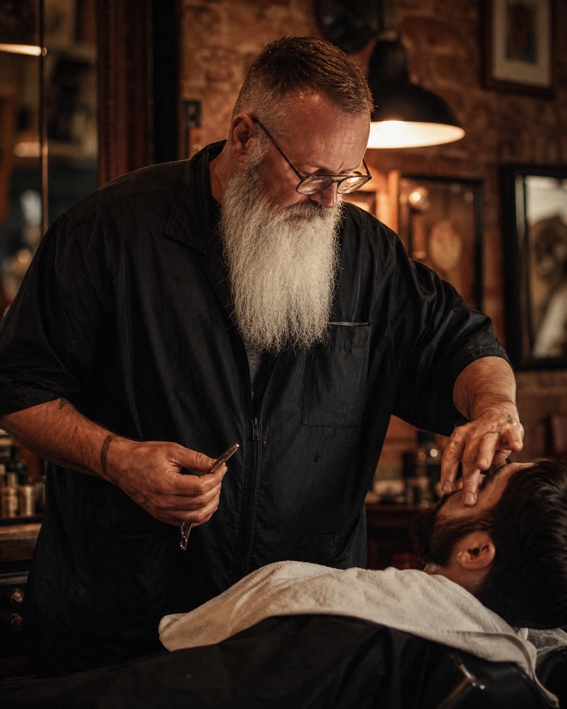
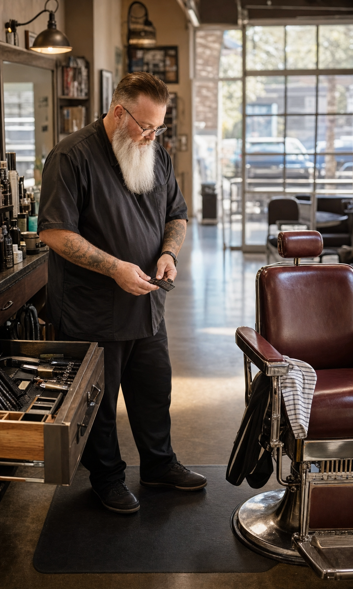

PAPA MIKE

Barber / Tracy CA
Mike
Zeiger
Known around the shop as Papa Mike. A straightforward working barber at Tenth Street Barber Co.


Appointments

Barber / Tracy CA
Known around the shop as Papa Mike. A straightforward working barber at Tenth Street Barber Co.


Appointments